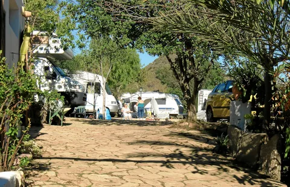
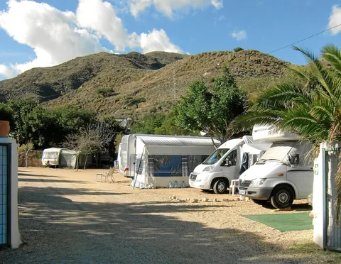
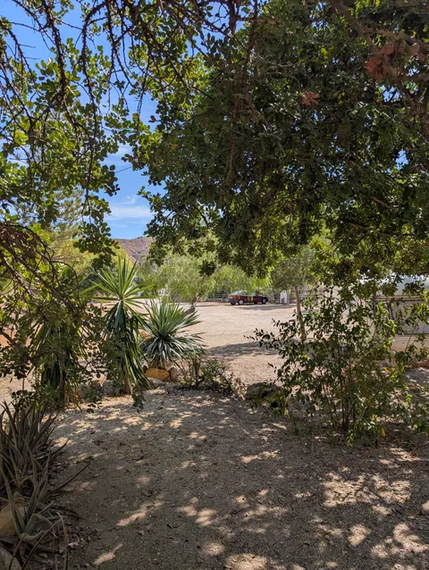
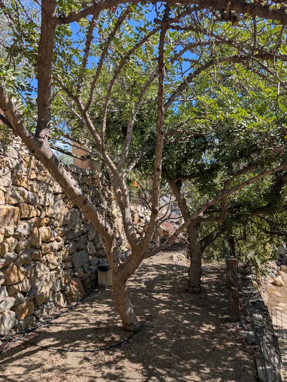
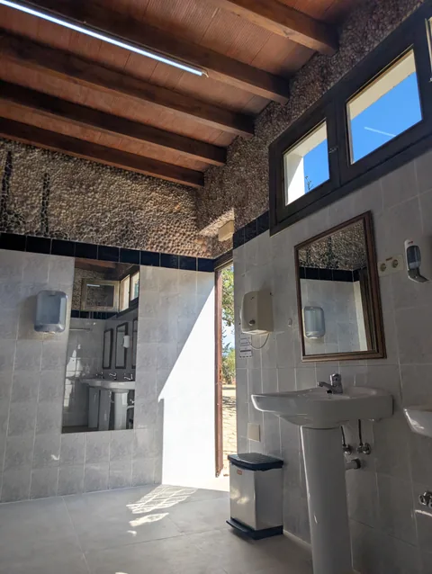
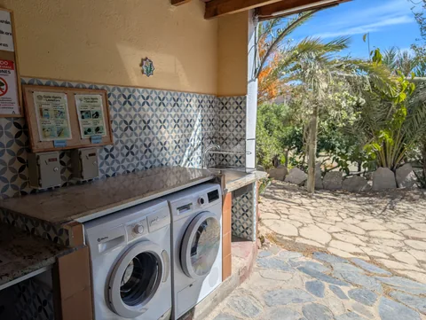
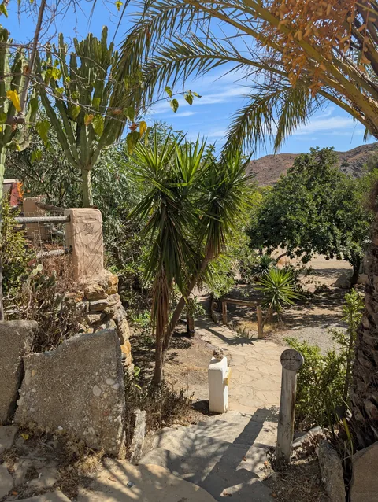
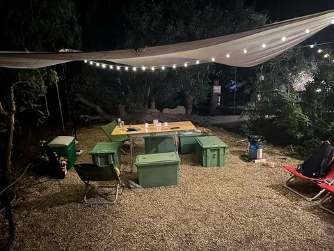
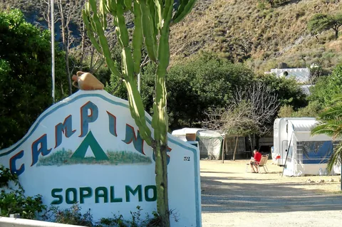

TIENDA · CARAVANA · CAMPER
Tu parcela, tu refugio
28 parcelas distribuidas en dos alturas, entre arbolado y vegetación mediterránea.
Consultar una parcela ↗SOPALMO, MOJÁCAR · ALMERÍA
28 parcelas, dos casas rurales y la Sierra Cabrera de fondo. Un camping familiar para disfrutar del Mediterráneo a tu ritmo.
Abierto todo el año · Trato directo con el camping

28 parcelas entre árboles
2 casas con terraza
Todo el año para hacer una pausa
A 4 km del Mediterráneo
ENCUENTRA TU SITIO
Con tu tienda, tu casa sobre ruedas o las llaves de una casa rural. Tú eliges cómo quedarte.

TIENDA · CARAVANA · CAMPER
28 parcelas distribuidas en dos alturas, entre arbolado y vegetación mediterránea.
Consultar una parcela ↗
CASA RURAL · HASTA 5 PERSONAS
Paredes encaladas, dos dormitorios y una terraza para alargar las sobremesas.
Descubrir El Cortijillo ↗
CASA RURAL · HASTA 5 PERSONAS
Un dormitorio amplio para compartir en familia, salón-cocina y terraza cubierta.
Descubrir El Mirador ↗
LA VIDA EN EL CAMPING
Un desayuno a la sombra. Un paseo por la sierra. Volver de la playa y sentir que ya estás en casa.
Sopalmo es un camping familiar y pequeño, en una ladera a las afueras de Mojácar. Aquí encontrarás un ambiente tranquilo y una buena base para recorrer la costa de Almería.
El terreno se reparte en dos alturas, con caminos y escaleras. Si necesitas un acceso concreto o vienes con un vehículo grande, háblalo con nosotros antes de llegar.
Conoce dónde estamos ↗Agua caliente en duchas y fregaderos, lavandería y electricidad opcional en parcela.
Zonas comunes, cafetería-bar y WiFi en la zona común y en las casas.
Bienvenida en las parcelas. Para alojarte en una casa, consúltanos antes.
ASÍ ES POR DENTRO
Detalles del camping para que sepas qué encontrarás al llegar. Pulsa las fotos para verlas completas.




PARA QUEDARSE UN POCO MÁS
Cuando puedes viajar sin mirar el reloj, Sopalmo se disfruta de otra manera. Consulta nuestras tarifas de larga estancia y encuentra tu lugar para pasar la temporada.
Hablemos de tu invierno ↗
PLANIFICA TU ESTANCIA
Elige cómo quieres venir. Te ayudamos a encontrar la opción que encaje con tus fechas.
PARCELA + 2 ADULTOS
25 €/ noche
Temporada baja, un vehículo incluido. Electricidad y otros extras aparte.
Consultar parcela ↗CASA RURAL · 2 PERSONAS
80 €/ noche
Temporada baja. Casa completa y mínimo 2 noches.
Consultar casa ↗LARGA ESTANCIA
12 €/ noche
Tarifa de invierno de 91 a 365 noches. Parcela y 2 personas. Electricidad aparte.
Planear una estancia larga ↗IVA incluido. Una sola noche en parcela lleva un suplemento de 5 €. Tarifas de referencia consultadas el 21/09/2026; el camping confirma las aplicables a tus fechas.
| Concepto | Baja | Alta |
|---|---|---|
| Parcela · incluye 1 vehículo | 13,00 € | 19,00 € |
| Adulto | 6,00 € | 8,00 € |
| Niño de 3 a 12 años | 5,00 € | 6,00 € |
| Electricidad | 4,40 € | 4,40 € |
| Mascota | 1,50 € | 1,50 € |
| Tienda adicional | 8,00 € | 11,00 € |
| Caravana adicional | 8,00 € | 11,00 € |
| Autocaravana adicional | 13,00 € | 19,00 € |
| Coche adicional | 5,00 € | 7,00 € |
| Moto adicional | 5,00 € | 6,00 € |
| Alquiler de nevera | 6,00 € | 8,00 € |
| Ocupación | Noche baja | Noche alta | Semana baja | Semana alta |
|---|---|---|---|---|
| 2 personas | 80,00 € | 90,00 € | 500,00 € | 630,00 € |
| 3 personas | 80,00 € | 110,00 € | 500,00 € | 770,00 € |
| 4 personas | 90,00 € | 120,00 € | 590,00 € | 840,00 € |
| 5 personas | 100,00 € | 150,00 € | 630,00 € | 1000,00 € |
| Duración | Precio / noche |
|---|---|
| 2–3 noches | 24,00 € |
| 4–14 noches | 20,00 € |
| 15–30 noches | 17,00 € |
| 31–60 noches | 15,00 € |
| 61–90 noches | 14,00 € |
| 91–365 noches | 12,00 € |
SALIR A DESCUBRIR
Dedica un día a la playa, otro a pasear por Mojácar y otro a perder la noción del tiempo. Tú pones el plan.
Calles blancas, miradores y una parada sin prisa en el pueblo.
Playas, calas y paisajes volcánicos para explorar en coche. El camping está en Sopalmo, fuera del parque natural.
El paisaje que nos rodea, con caminos para descubrir a pie. Pregúntanos por rutas adecuadas a tu plan.
Indica tus fechas en el formulario y prepara tu consulta por WhatsApp o correo. Te confirmamos disponibilidad, precio y condiciones. Preparar o enviar una consulta no bloquea una parcela ni confirma la reserva.
Estamos en Sopalmo, a las afueras de Mojácar, con el Mediterráneo a unos 4 km. El camping está en un entorno de sierra; ten en cuenta el desplazamiento para tus días de playa.
Sí, las mascotas son bienvenidas en las parcelas, con la tarifa correspondiente. En las casas rurales es necesario consultarlo previamente.
La información actual del camping indica entrada desde las 13:00 y salida hasta las 12:00. Si vas a llegar tarde, avísanos antes para organizar tu llegada.
La parcela incluye un vehículo. Las personas, la electricidad y otros extras se calculan según tarifa. Hay agua caliente en duchas y fregaderos. Puedes consultar el desglose completo en la sección de tarifas.
Sí. El camping ocupa una ladera y se distribuye en dos alturas, con caminos y escaleras. Si tienes movilidad reducida o necesitas una parcela de acceso sencillo, consúltanos para valorar la opción adecuada.
Cada casa admite hasta 5 personas y tiene una estancia mínima de 2 noches. El Cortijillo tiene dos dormitorios; El Mirador, un dormitorio amplio. Ambas tienen cocina y terraza.
TU PRÓXIMA ESCAPADA
Cuéntanos cuándo te gustaría venir. Te confirmamos el precio y la disponibilidad personalmente.
Trato directo con el camping.
La consulta no confirma ni cobra una reserva.
El camping te confirmará si hay sitio y el importe de la estancia.
NOS VEMOS EN SOPALMO
Sopalmo · 04638 Mojácar
Almería, Andalucía
GPS: 37.0647459, −1.8690642

{kind=link}
{kind=link}
{kind=link}
{kind=link}